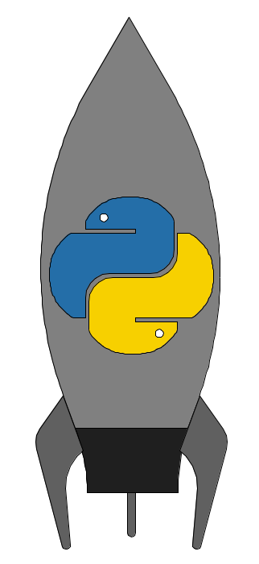
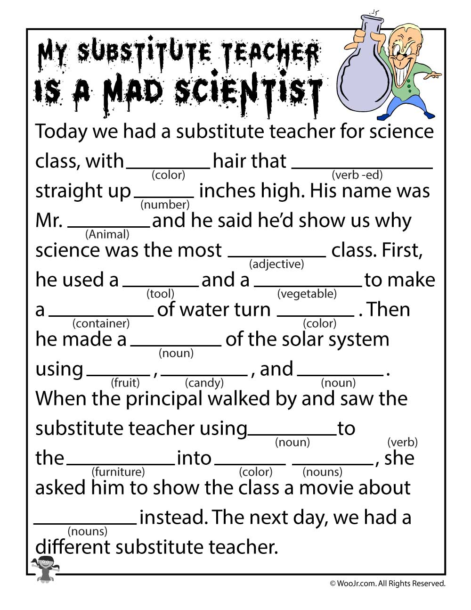

Screenshot |
Description of the program |
Program repository |

|
This was program that was written using the "turtle" module. The objective of the program was to create a drawing of a house using at least three differnt colors, a circle, a rectanle, and a triangle. In addition to these base requirments, I included additional segments of code to cause the smoke from the chimeny of the house to appear in a new random way each time the program is run. |
House |
|  |
This was program that was written using the "turtle" module. The objective of the program was to create a drawing of a rocket using at least three differnt colors, a circle, a rectanle, and a triangle. In addition to these base requirments, I decided to reproduce the python rocket which required the use of partial circles to create the curved sides. |
Rocket |
|  |
This was program that was written to demonstrate concatenation. It asks four numorous user inputs then returns the user inputs as part of a mad lib story about a substitute teacher who happens to also be a crazy scientist. |
Mad Lib |
|
This was program that was written to demonstrate how to combine user text inputs with the turtle library to create a more interactive drawing as well as basic iteration and braching as part of the program. At this most basic step the user is asked what shape they want to draw along with the size of shape. After the shape is drawn the user is asked if they want to do it again and the program will continue to loop untill the user says otherwise. |
Shapes |